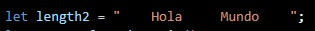

TRIM() es una función que elimina los espacios no deseados de una cadena de texto, ya sean al principio, al final o repetidos entre palabras. Su utilidad principal es normalizar el texto, por ejemplo, eliminando espacios innecesarios de datos obtenidos de otras aplicaciones, dejando solo un espacio simple entre palabras.
